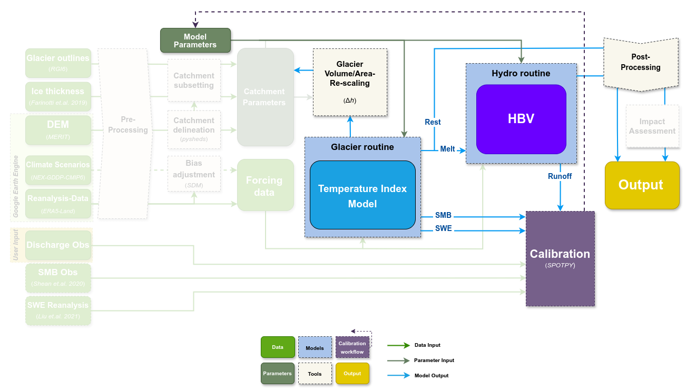

MATILDA: Modeling wATer resources In gLacierizeD cAtchments

MATILDA is a Python-based modeling framework for simulating water resources in glacierized catchments. This repository contains the core routines of the comprehensive MATILDA-Online workflow:
The matilda.core module combines a temperature-index melt model with the HBV model for hydrological simulations.
The matilda.mspot_glacier module provides a parameter optimization routine using the spotpy library.
While MATILDA can be used as a stand-alone model, the MATILDA-Online workflow provides comprehensive tools for data acquisition, pre- and post-processing with detailed documentation.

Repository Structure
.
├── Example
│ ├── example_workflow.py # Example script for running MATILDA
│ ├── forcing_data.csv # Input data for example workflow
│ └── runoff_data.csv # Observed runoff data
├── matilda
│ ├── core.py # MATILDA core routines
│ └── mspot_glacier.py # Parameter optimization routines
...
Installation
The tool’s dependencies are set to integrate with MATILDA-Online. It requires Python 3.11 and the following libraries:
- xarray
- numpy
- pandas
- matplotlib
- scipy
- datetime
- hydroeval
- HydroErr
- plotly
- spotpy
- pyyaml
The MATILDA package and it’s dependencies can be installed on your local machine using pip or a similar package manager. You can either install the package by using the link to this repository:
pip install git+https://github.com/cryotools/matilda.git
…or clone this repository to your local machine, navigate to the top-level directory and use it:
pip install .
Usage
A detailed walkthrough of the proposed modeling workflow and calibration strategy can be found at the MATILDA Online Webpage. For a quick start to the stand-alone model, see the application example and use the following guidelines.
Forcing Data
The minimum input is a CSV file containing time series of air temperature (°C or K), total precipitation (mm), and (if available) evapotranspiration (mm) data in the format shown below. If evapotranspiration is not provided, it is estimated from air temperature according to Oudin et.al. 2010. A series of discharge observations (mm) is used to calibrate the model. If no discharge data are provided, the model runs with default parameters. All datasets require daily resolution.
TIMESTAMP |
T2 |
RRR |
PE |
|---|---|---|---|
2011-01-01 00:00:00 |
-18.2 |
0.00 |
0.00 |
2011-01-01 01:00:00 |
-18.3 |
0.1 |
0.00 |
2011-01-01 02:00:00 |
-18.2 |
0.1 |
0.00 |
… |
… |
… |
… |
Date |
Qobs |
|---|---|
2011-01-01 |
0.17 |
2011-01-01 |
0.19 |
… |
… |
The forcing data are scaled to the mean elevations of the glacierized and ice-free subcatchments, respectively, using linear lapse rates. Reference elevations must be provided for the input data, the entire catchment, and the glacierized fraction. Automated routines for catchment delineation and public data download can be found in the MATILDA Online workflow.
Glacier Data
To apply the Δh parameterization of Huss and Hock 2015 within the DDM routine to calculate glacier evolution over the study period, you need to provide data on the initial glacier cover. The routine requires an initial glacier profile containing the spatial distribution of ice over elevation bands at the beginning of the study period in the form of a dataframe:
Elevation |
Area |
WE |
EleZone |
|---|---|---|---|
3720 |
0.005 |
10786.061 |
3700 |
3730 |
0.001 |
13687.801 |
3700 |
3740 |
0.001 |
12571.253 |
3700 |
3750 |
0.002 |
12357.987 |
3800 |
.. |
… |
… |
… |
Elevation - elevation of each band (10 m intervals recommended)
Area - glacierized area in each band as a fraction of the total catchment area (column sum is the glacierized fraction of the total catchment)
WE - ice thickness in mm w.e.
EleZone - combined bands across 100-200 m.
Parameter List
MATILDA has 21 non-optional parameters, most of which are HBV standard parameters.
Parameter |
Description |
Unit |
Default Value |
|---|---|---|---|
$\text{lr}_{\text{temp}}$ |
Temperature lapse rate |
°C m⁻¹ |
-0.006 |
$\text{lr}_{\text{prec}}$ |
Precipitation lapse rate |
mm m⁻¹ |
0 |
$\text{PCORR}$ |
Precipitation correction factor |
- |
1.0 |
$\text{TT}_{\text{snow}}$ |
Threshold temperature for snow |
°C |
0 |
$\text{TT}_{\text{diff}}$ |
Temperature range for rain-snow transition |
°C |
2 |
$\text{SFCF}$ |
Snowfall correction factor |
- |
0.7 |
$\text{CFMAX}_{\text{snow}}$ |
Melt factor for snow |
mm °C⁻¹ day⁻¹ |
5 |
$\text{CFMAX}_{\text{rel}}$ |
Melt factor for ice relative to snow |
- |
2 |
$\text{CWH}$ |
Water holding capacity of snowpack |
- |
0.1 |
$\text{CFR}$ |
Refreezing coefficient |
- |
0.15 |
$\text{AG}$ |
Control parameter of the glacier storage-release scheme |
- |
0.7 |
$\text{BETA}$ |
Shape coefficient for soil moisture routine |
- |
1.0 |
$\text{CET}$ |
Correction factor for evapotranspiration |
- |
0.15 |
$\text{FC}$ |
Field capacity of soil |
mm |
250 |
$\text{LP}$ |
Fraction of field capacity for maximum evapotranspiration |
- |
0.7 |
$\text{K}_0$ |
Recession coefficient for surface flow |
day⁻¹ |
0.055 |
$\text{K}_1$ |
Recession coefficient for intermediate groundwater flow |
day⁻¹ |
0.055 |
$\text{K}_2$ |
Recession coefficient for deep groundwater flow |
day⁻¹ |
0.04 |
$\text{PERC}$ |
Percolation rate from upper to lower groundwater reservoir |
mm day⁻¹ |
1.5 |
$\text{UZL}$ |
Threshold for quick flow from upper zone |
mm |
120 |
$\text{MAXBAS}$ |
Length of triangular routing function |
day |
3.0 |
License
This project is licensed under the MIT License.
References
The development of MATILDA integrated several well-established hydrological and glacier modeling tools. References for the primary methods and libraries used in the model are listed below:
PyPDD (Temperature-Index Model):
Seguinot, J. (2019). PyPDD: a positive degree day model for glacier surface mass balance (Version v0.3.1). Zenodo. http://doi.org/10.5281/zenodo.3467639
LHMP and HBV Models:
Ayzel, G. (2016). Lumped Hydrological Models Playground. github.com/hydrogo/LHMP, doi:10.5281/zenodo.59680.
Ayzel G. (2016). LHMP: lumped hydrological modelling playground. Zenodo. doi:10.5281/zenodo.59501.
Bergström, S. (1992). The HBV model: Its structure and applications. Swedish Meteorological and Hydrological Institute. PDF
Δh (delta-h) Parametrization:
Seibert et.al. (2018). Representing glacier geometry changes in a semi-distributed hydrological model. https://doi.org/10.5194/hess-22-2211-2018
SPOTPY (Parameter Optimization):
Houska, T., Kraft, P., Chamorro-Chavez, A., & Breuer, L. (2015). SPOTting Model Parameters Using a Ready-Made Python Package. PLOS ONE, 10(12), 1–22. http://doi.org/10.1371/journal.pone.0145180